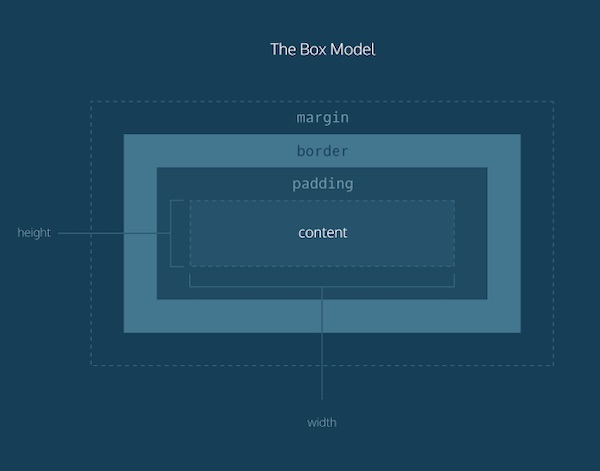

Structure, Phrasing and Display
Structural Block elements begins a new line on the webpage. Block
elements extend the width even further than the maximum capacity
of parent elements. It is used for large content such as paragraphs
and page divisions. It is used within the body of the HTML code. It
can consists of other block-level elements or inline elements.
A phrasing inline element on the other hand, does not start a new line.
It begins in a line and width is only allowed by what is defined by tags.
The different settings of the display property in CSS are the inline,
block, contents, flex, grid, inline-block and a lot more. With Inline, it
displays an element as an inline. In Block, it starts as a new line and
occupies a whole width. In contents, the elements gets a next level up
because it makes the container disappear. In flex, it displays the element
as a block-level flex container. In grid, it displays the element as a
block-level grid container.
Box Model
CSS treats each element as a box with properties that declares their appearance onthe page. This box model helps with creating default layout scheme. The Box Model consists of margins, borders, padding. In the padding area extends the content area into the element to add padding and it showcase padding dimensions. In border area, it extends the padding area body adding borders. In margin area, it extends the border with an empty area that separates the elements by each other. Box-sizing property allows adding padding and borders in the total width and height of the element. It calculates the height and width of an element.

Background Images
We use IMG if we want to include the image as a default and to have semantic meaning. In IMG we rely on the browser to showcase the scale of the proportions of the size of texts. In CSS Background-images, we use them if the images are not included in the content. We use this if we don't want to make the image as a default and if we need only a portion of an image to be visible or fill the entire window as a background.